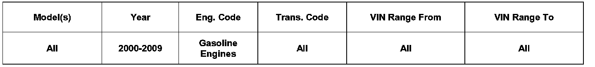

Fuel System - Fuel Related Driveability Issues
0109-01
Affected Vehicles
Condition
01 09 01 Jan. 08, 2009 2014815 Supersedes T. B. Group 01 number 07-55 dated July 17, 2007 due to additional models and model year applicability.
Gasoline Quality
The use of contaminated gasoline, seasonal fuel changes (summer/winter fuel) or gasoline with a low content of deposit control additives may result in one or more of the following conditions:
Excessive accumulation of deposits on intake valves, intake manifold, fuel injectors and combustion chambers.
Engine runs rough after cold start.
Excessive engine cranking time.
Stumbles while driving.
Rough engine idle.
Loss of engine performance.
Poor fuel economy.
Conditions may be severe enough to illuminate the MIL in conjunction with storage in the ECM data memory of DTCs for misfire (example: P0300, P030x) and / or lean fuel system (example: P0171, P0174, P1128, P1130, P1136, P1138).
Technical Background
1. Condition may be caused by use of contaminated gasoline.
2. Condition may be caused by use of gasoline with a low content of deposit control additives.
Production Solution
No production change required
Service
1. If use of contaminated gasoline is suspected:
Consider advising the customer to change gasoline source (brand/gas station). Contaminated gasoline may exhibit one or more of the following characteristics:
- May have unique color and odor.
- May contain water.
- May contain sediments and suspended matter.
- May appear cloudy and (after settling) may show signs of separation.
If use of gasoline with a low content of deposit control additives is suspected:
Recommend to the customer the exclusive use of TOP TIER Detergent Gasoline. These products provide improved deposit control performance. Current TOP TIER Gasoline retailers offering this product in all their octane grades include the following brands:
QuikTrip
Chevron
Conoco
Phillips 76
Shell
Entec Stations
MFA Oil Company
Kwik Trip/Kwik Star
The Somerset Refinery, Inc.
Chevron-Canada
Aloha Petroleum
Tri-Par Oil Company
Shell-Canada
Texaco
Petro-Canada
Sunoco-Canada
- For the fast removal of existing carbon deposits from injectors, combustion chambers and intake valves (intake valves apply to MPI engines only) gasoline additive G00170003 can be used. Mix additive directly with gasoline in fuel tank following mix ratio described on additive container. (example 20 ml per 10 liters of gasoline, 150 ml per 20 gallons of gasoline).
Warranty
Information only.
Required Parts and Tools
No Special Parts required.
No Special Tools required.
Additional Information
All part and service references provided in this Technical Bulletin are subject to change and/or removal. Always check with your Parts Dept. and Repair Manuals for the latest information.